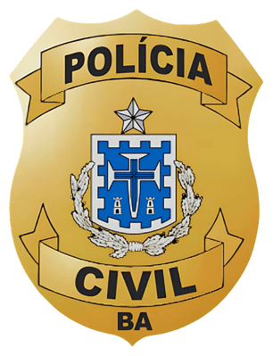

PCBA

O edital já saiu. Agora o foco é entender como será a seleção de Investigador, Escrivão e Delegado.
PCBA
O edital já saiu. Agora o foco é entender como será a seleção de Investigador, Escrivão e Delegado.
PCBA
Investigador · Escrivão · Delegado
PCBA
O edital já saiu. Agora o foco é entender como será a seleção de Investigador, Escrivão e Delegado.
PCBA
O edital já saiu. Agora o foco é entender como será a seleção de Investigador, Escrivão e Delegado.
Agente de Trânsito de Jaguaribe/CE
INSCRIÇÕES ATÉ
Confira o prazo atualizado e sua situação no portal da Consulpam.
PCBA
O edital já saiu. Agora o foco é entender como será a seleção de Investigador, Escrivão e Delegado.

Deslize →Instituto AOCP. As inscrições já terminaram.
PROVAS PREVISTAS · 6 de dezembro de 2026 · Salvador
Prova objetiva
5 alternativas
100 pontos no total
70 pontos
para habilitação
Depois desse bloco comum, cada cargo muda bastante.
Contabilidade
Administrativo, Constitucional, Penal, Processo Penal, Legislação Penal Especial e Estatística.
Arquivologia
Administrativo, Constitucional, Penal, Processo Penal, Legislação Penal Especial e Estatística.
100 questões na prova anterior
Direito públicoAdministrativo, Constitucional e Tributário.
Ciências penaisPenal, Processo Penal, Criminologia e Legislação Penal Especial.
Direito privadoCivil, Empresarial e Processo Civil.
Outras áreasAmbiental.
A discursiva também é diferente para esse cargo.
MANHÃObjetiva
TARDEDiscursiva
Depois ainda vêm títulos, avaliações antes da admissão, investigação social e curso de formação.
Agora, o trabalho é em cima da matriz oficial e dos cortes reais. Objetiva e discursiva estão previstas para Salvador em 06/12/2026.
Salve este panorama para consultar durante a reta até a prova.